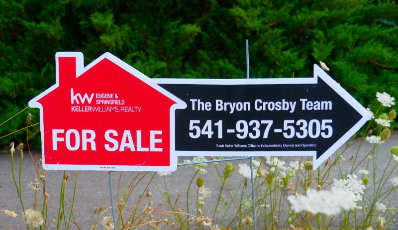

![NTK]()

The bond market sent the bill, and homebuyers got the invoice. Freddie Mac's Thursday data put the 30-year fixed rate at 7.03%, up from 6.95% a week earlier and 6.30% a year ago (USA Today). The mechanism sits one layer down: the 10-year Treasury yield, the benchmark mortgage lenders price against, touched 5.17% on Thursday, a level last seen in 2007, after a Wednesday auction of five-year notes drew weaker demand than Wall Street desks expected (The Independent). Mark Malek, chief investment officer at Siebert Financial, put the cause plainly: rising oil prices from the Iran war, a hawkish Federal Reserve, stronger-than-expected growth data and a government forced to offer sweeter terms to attract buyers, all landing the same week (CBS News).
Four burners, all on high, all at once.
Mark Malek, chief investment officer, Siebert FinancialThat combination didn't stay contained to Treasury auctions. Stijn Van Nieuwerburgh, a finance professor at Columbia Business School, called the jump from 6% to 7% "a big change" that "will further dampen an already weak housing market," and the numbers back him up: existing home sales fell 2% in August from July, the lowest pace since June of last year (The New York Times). On a $400,000 loan, the rate move since late February now costs a buyer about $276 more every month (The Independent). At the median existing-home price of roughly $429,000, that single percentage point compounds into tens of thousands of dollars over the life of the loan (NPR).
The pain didn't stop at the mortgage desk. Auto loans are priced off the same five- and 10-year Treasury yields, and Patrick Manzi, chief economist for the National Automobile Dealers Association, said car financing costs are already following mortgage rates upward, with new-vehicle loan rates up 20 basis points in two months (CNBC). Homebuilders felt it from the other direction. Bill Owens, chairman of the National Association of Home Builders, said higher construction financing costs are limiting momentum for new construction just as buyers are pulling back (The New York Times).
One group is positioned to benefit from exactly this kind of dislocation. Private credit lenders including Apollo and Blackstone tend to gain ground when public markets seize up, stepping in as the "steady helping hand" borrowers can't find at auction (Semafor). IMF head Kristalina Georgieva framed the wider stakes at Semafor's Next 3 Billion event this week, warning that rising interest payments choke a government's ability to help anyone with the cost of living, and that people should "prepare for people being more unhappy" (Semafor).
The next data point that matters isn't the mortgage rate. It's what the Fed does with it, and who's still standing in the housing market by Halloween.
The October Fed meeting is now close to a coin flip that's tilting the wrong way for buyers. CME FedWatch traders put the odds of an October rate hike at 70%, with another hike in December at 56% likelihood, according to CBS News, which would push the Fed's benchmark up another 0.75 percentage point from where it sat at the start of September. The Fed doesn't meet in November, which means whatever the committee decides at its late-October meeting sets the ceiling for mortgage pricing through the entire holiday home-shopping season, the traditional low point for competition and the moment buyers priced out this fall would normally get a second chance. Kevin Warsh has spent the year insisting the 2% inflation target still holds, but Iran war oil disruptions have already dragged the timeline for hitting that target out to 2029 in the FOMC's own median projection. If the October meeting goes the way futures traders expect, the psychological 7% mortgage threshold stops being a milestone and starts being a floor.
That's the near-term mechanism. The slower one is structural, and it will outlast the war. Realtor.com's Jake Krimmel and NAR's Lawrence Yun both tie the rate ceiling to an Iran war resolution, but Yun added a caveat that matters more: even a peace deal won't undo the pressure from federal budget deficits and AI-driven data center investment competing for the same capital markets. That means the most likely outcome isn't a rate collapse once the war ends. It's a partial retreat, the kind Zillow is already forecasting, to 6.7% by year's end and 6.3% by the end of 2027, still well above the sub-6% level that had briefly reopened the market in February.
The buyers who lose the most in that scenario are the ones James Graham's Sydney research already flagged as most exposed on the other side of the Pacific: younger, first-time, lower-income borrowers who don't have cash sitting on the sidelines to take advantage of softer prices. Freddie Mac and MBA data both show sales volume thinning into a buyer's market, with Realtor.com counting 70% of U.S. metro markets tilting that direction. The households positioned to win are the ones with 780-plus credit scores and 20% down, who are already paying nearly a full percentage point less than subprime borrowers.
The households positioned to lose it permanently, not just this season, are the ones for whom this year's rate cycle collides with a life event. A new job, a new kid, a lender who changes the serviceability math. Graham's research on Australia's cycle found that first shock does the most damage precisely because it catches people mid-decision, and the U.S. is now five weeks into its own version of the same test, with the October Fed meeting deciding whether that damage compounds or starts to ease.
The room the Fed and the bond market built this week has three doors in it that weren't there in August, and two of them lead somewhere useful.
Congress's own housing bill just became the only lever left that doesn't run through the Fed. The 21st Century ROAD to Housing Act passed in June with the modest goal of easing regulations for builders, back when mortgage rates sat near 6%. Now that rates have crossed 7% and the Fed's hands are tied by an inflation target Warsh can't hit until 2029, that supply-side law is the one policy tool still standing that doesn't require a rate cut to work. Bill Owens at the National Association of Home Builders has already said construction financing costs are choking new-home momentum, which means the law's deregulatory provisions and the industry's cost problem are now aimed at each other in a way they weren't three months ago, when the housing slowdown looked cyclical rather than structural. If states and localities move fast on the permitting and zoning relief the law enables, before the next building season, they'd be adding supply into a market where 70% of metros are already tilting toward buyers, which is the one condition under which new inventory actually moves prices instead of just sitting on a builder's balance sheet.
That opens a second door, one that only makes sense once the first one is open. If cheaper-to-build homes start reaching a buyer's market at the same time the Fed's October decision lands, the winners split by geography, not just by credit score. Realtor.com's Jake Krimmel has already mapped which metros are tipping toward buyers' leverage. Layer the ROAD Act's building relief onto that same map, and the markets that get both a supply bump and a rate ceiling become the first place since the Iran war started where a first-time buyer's arithmetic actually improves instead of just holding steady. That's a narrower door than it sounds. It only opens in metros where local governments move on the permitting relief this fall, not in the ones that let the law sit. Which means the reform Van Nieuwerburgh is "hopeful" about is really a bet on a few hundred city councils and planning boards, not on Washington.
The third door is APRA's, and it's the one Australia opened first. James Graham's research into the RBA's rate cycle already produced a concrete regulatory question: does a market five hikes into a tightening cycle still need the same 3-percentage-point serviceability buffer it needed at the bottom? The Fed doesn't set that buffer here, but the FHFA and mortgage underwriters at Fannie and Freddie run an equivalent calculation on every loan file, and they've had no public reason to revisit it, because nobody's published Graham's findings yet. If his research lands in the U.S. before the October Fed meeting, a regulator here has a data-backed argument, tested against a comparable housing market, for loosening the underwriting math without loosening the benchmark rate itself. That's the generative version of the same shock this section has spent three items describing: a policy response that doesn't need Iran to end and doesn't need the Fed to reverse course, just a regulator willing to ask the question a Sydney economist already asked out loud.
Someone is telling this reader why their mortgage rate doubled, and it isn't the person who actually raised it.
The war did this, not the deficit. That's the version circulating from the White House this week, and it has the advantage of being partly true: oil supply disruption from the Iran war is a real input into inflation, and inflation is a real input into the 10-year Treasury yield that mortgage lenders price against. But the framing does a specific job. It lets a fiscal problem hide inside a foreign policy problem. Lawrence Yun, chief economist for the National Association of Realtors, said the quiet part in his own interview: even if Iran resolves tomorrow, "budget deficit pressures and economic growth driven by AI and data center investment will prevent mortgage rates from falling meaningfully" (CBS News). Weak demand at Wednesday's five-year Treasury note auction wasn't a war story. It was investors deciding the United States government's own IOUs needed a higher price to move, the bond market equivalent of a landlord raising rent because the tenant's credit got shakier (CBS News). A war ending doesn't retire debt. It just removes one excuse for why buying that debt got more expensive.
The people with the most reason to want the war to carry the blame are the ones who'd otherwise have to answer for the deficit, and the timing sharpens the incentive: the Financial Times noted the 7% threshold is landing "just weeks before nationwide elections," with Republicans defending control of the Senate and House while an affordability crisis compounds on their watch (Financial Times). President Trump has made housing affordability a signature promise, directing Fannie Mae and Freddie Mac to buy up mortgage-backed securities specifically to push borrowing costs down. The FT's own math shows what that effort actually bought: home prices up 0.5% since he took office, rent up 4.8% (Financial Times). If the war is the whole story, that's a president unlucky in timing. If the deficit is doing real work too, a policy that fed the debt is now competing with a policy meant to lower rates, and the two are canceling each other out in the same monthly mortgage bill.
This isn't a new mechanism. Governments have leaned on external shocks to explain domestic borrowing costs before, because a war has a villain and a deficit only has arithmetic. The tell here is Yun's own hedge: the man whose job is optimism about housing already conceded the rate ceiling outlasts the ceasefire.